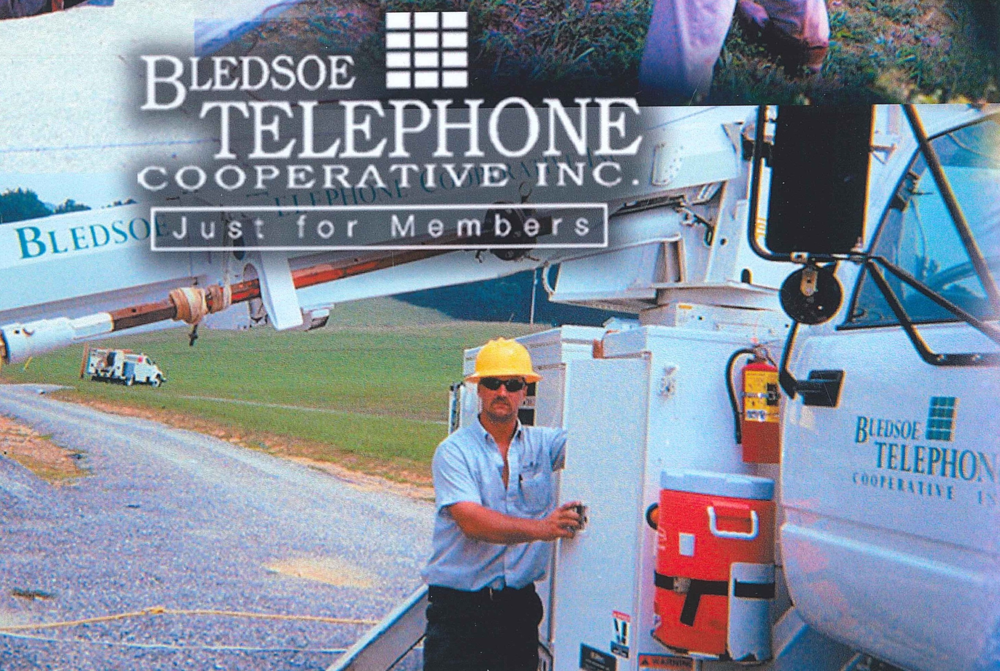

The Start of Bledsoe Telephone Cooperative
Bledsoe Telephone started in the year 1953 with only 10 subscribers at the time, It all started when a group of local people started the cooperative. We have certainly come a long way since then. Now more that 10,000 subscribers as of 2019, the cooperative keeps growing. Now with our state of the art Fiber Optic internet connections to the world. We are now bringing a Fiber Optic internet connection to the home, which is capable of doing speeds up to now 1 GIG with up to 10 GIG in the works currently.